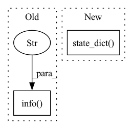

Pattern ID :2550
Before Change
if tokenizer is not None:
logger.info(f"Saving tokenizer to {path}", ranks=[0])
tokenizer.save_pretrained(path)
logger.info(f"Tokenizer saved to {path} Successfully" , ranks=[0])
except AttributeError:
state_dict = unwrapped_model.state_dict()
if only_rank0 and dist.get_rank() != 0:
returnAfter Change
if self.stage == 3:
assert isinstance(base_model, ZeroDDP)
// for stage 3, state_dict() method should be called on every rank
state_dict = base_model.state_dict(only_rank_0=only_rank0)
else:
// only_rank0 is false or rank == 0
state_dict = base_model.state_dict()
if only_rank0 and dist.get_rank() != 0:In pattern: SUPERPATTERN
Frequency: 3
Non-data size: 2
Instances Fragment ID: 10508256
Project Name: hpcaitech/colossalai
Commit Name: 842768a1749bf3d9961a48d2bf96ca5abef7d2da
Time: 2023-04-27
Author: lhx0217@gmail.com
File Name: applications/Chat/coati/trainer/strategies/colossalai.py
M Class Name: ColossalAIStrategy
N Class Name: ColossalAIStrategy
M Method Name: save_model(4)
N Method Name: save_model(5)
M Parent Class: DDPStrategy
N Parent Class: DDPStrategy
M File Name: applications/Chat/coati/trainer/strategies/colossalai.py
N File Name: applications/Chat/coati/trainer/strategies/colossalai.py
M Start Line: 168
M End Line: 196
N Start Line: 154
N End Line: 166
Before Change
paddle.save(gen_optimizer.state_dict(), model_path + "_gen.pdopt")
paddle.save(dis_optimizer.state_dict(), model_path + "_dis.pdopt")
logger.info(f"----- Save model: {model_path}.pdparams")
logger.info(f"----- Save gen optim: {model_path}_gen.pdopt" )
logger.info(f"----- Save dis optim: {model_path}_dis.pdopt")
if __name__ == "__main__":After Change
model_path = os.path.join(
config.SAVE, f"{config.MODEL.TYPE}-Epoch-{epoch}-Loss-{train_loss}")
paddle.save({"gen_state_dict":gen.state_dict(),
"dis_state_dict":dis.state_dict() }, model_path + ".pdparams")
paddle.save({"gen_state_dict":gen_optimizer.state_dict(),
"dis_state_dict":dis_optimizer.state_dict()}, model_path + ".pdopt")
logger.info(f"----- Save model: {model_path}.pdparams") Fragment ID: 10508257
Project Name: br-idl/paddlevit
Commit Name: 5d12ce4e3882b586b57ffc25a5b8709d70eb5e1b
Time: 2021-08-27
Author: zhangwei@zingfront.com
File Name: gan/Styleformer/main_single_gpu.py
M Class Name: AnonimousClass
N Class Name: AnonimousClass
M Method Name: main(0)
N Method Name: main(0)
M Parent Class:
N Parent Class:
M File Name: gan/Styleformer/main_single_gpu.py
N File Name: gan/Styleformer/main_single_gpu.py
M Start Line: 367
M End Line: 436
N Start Line: 254
N End Line: 404
Before Change
paddle.save(gen_optimizer.state_dict(), model_path + "_gen.pdopt")
paddle.save(dis_optimizer.state_dict(), model_path + "_dis.pdopt")
logger.info(f"----- Save model: {model_path}.pdparams")
logger.info(f"----- Save gen optim: {model_path}_gen.pdopt" )
logger.info(f"----- Save dis optim: {model_path}_dis.pdopt")
def main():After Change
model_path = os.path.join(
config.SAVE, f"{config.MODEL.TYPE}-Epoch-{epoch}-Loss-{train_loss}")
paddle.save({"gen_state_dict":gen.state_dict(),
"dis_state_dict":dis.state_dict() }, model_path + ".pdparams")
paddle.save({"gen_state_dict":gen_optimizer.state_dict(),
"dis_state_dict":dis_optimizer.state_dict()}, model_path + ".pdopt")
logger.info(f"----- Save model: {model_path}.pdparams") Fragment ID: 10508259
Project Name: br-idl/paddlevit
Commit Name: 5d12ce4e3882b586b57ffc25a5b8709d70eb5e1b
Time: 2021-08-27
Author: zhangwei@zingfront.com
File Name: gan/Styleformer/main_multi_gpu.py
M Class Name: AnonimousClass
N Class Name: AnonimousClass
M Method Name: main_worker(0)
N Method Name: main_worker(0)
M Parent Class:
N Parent Class:
M File Name: gan/Styleformer/main_multi_gpu.py
N File Name: gan/Styleformer/main_multi_gpu.py
M Start Line: 390
M End Line: 463
N Start Line: 276
N End Line: 428